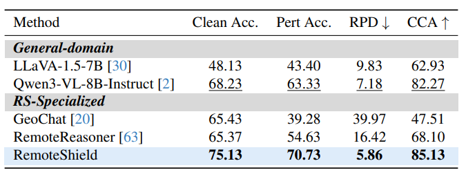
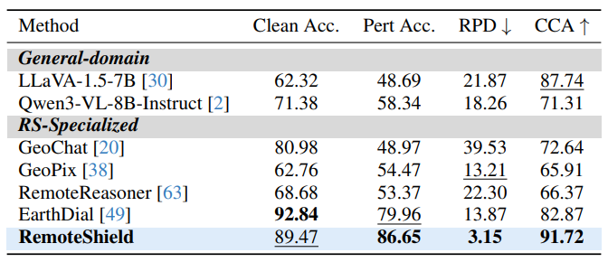
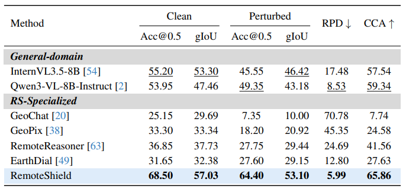

- Multimodal perturbation dataset. The paper constructs a comprehensive dataset that simulates environmental visual degradations and human-centric textual noise in real Earth Observation scenarios.
- Robustness diagnosis. It evaluates representative remote sensing MLLMs and quantitatively reveals significant degradation under unconstrained noisy inputs.
- Cross-condition alignment. RemoteShield shifts robustness learning from passive noise fitting to active preference-based alignment across clean and perturbed conditions.
- Robust EO performance. Extensive experiments show improved accuracy and reasoning consistency under coupled multimodal perturbations.

Scene classification: RemoteShield improves perturbed accuracy, RPD, and CCA.

Visual question answering: RemoteShield maintains answer correctness and cross-condition consistency.

Visual grounding: RemoteShield resists localization drift under multimodal perturbation.